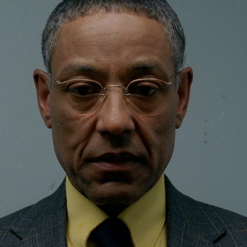

Gustavo Fring
Breaking Bad & Better Call Saul hahmo Gustavo "Gus" Fring, toisin tiedetty nimellä kanamies ja se jota ei kenen nimeä ei kutsuta. Chilean-Amerikkailainen ravintola yrittäjä ja suuri huume jakeilija joka pää osin toimi Albuquerque, New Mexicossa.
Gustavon piirteet
- Vakava bisnesmies
- Traumatisoitunut nuorenaikuisena, hömpöttely ystävä murhattiin hänen vieressään
- Piilossa silmien edessä.

Gustavo Fring & Hector Salamanca
Lisätietoa taustasta ja loresta
- 50-60 ikäinen molempien sarjojen aikana.
- Hector murhasi sen hömpöttely kaverin Maximino "Max" Archiniega jonka mainitsin aikaisemmin. Kosti vuosikymmeniä myöhemmin.
- Kuoli itse myöhemmin myös.